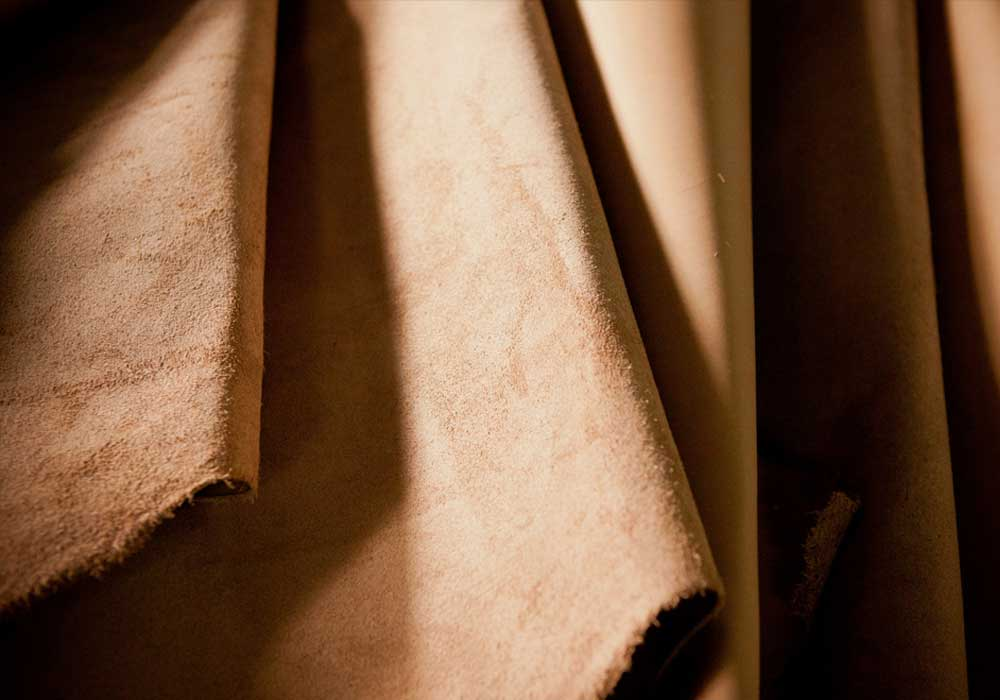

가죽에서 털을 제거하고, 무두질한 것을 유피라하고, 이것들을 총칭해서 피혁(皮革)이라 한다. 또, 털이 붙어 있는 채로 무두질한 것을 모피(毛皮)라 한다. 벗겨낸 가죽을 그대로 방치해 두면 곧 부패해 버리지만 적당한 유제로 처리해서 유피로 만들면 물에 적셔도 부패하지 않고, 건조시켜도 딱딱해지지 않으며, 내수내열성(耐水耐熱性)을 얻어, 각종 장구(裝具)의 재료로서 우수한 성질을 가진다. 유피의 원료, 곧 원피(原皮)는 소·말·돼지·양·산양 등 주로 포유동물의 가죽이나, 타조와 같은 조류의 가죽, 악어·도마뱀·뱀 등과 같은 파충류(爬蟲類)의 가죽도 이용된다.
